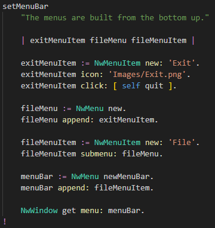
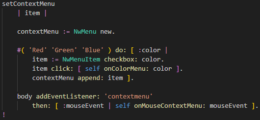

A NW.js app can have a menu bar with submenus and have context menus.
Scroll down to the method
setMenuBar that looks like this:

As stated, menus are built from the bottom up.
So first a menu item Exit is created, that is added to a File menu,
that is added to the main menu bar, that is added to the app window.
The Exit menu item had an icon that's a regular
*.png image.
And a click event is set chat calls the
quit method on the app.
Scroll down to the method
setContextMenu that looks like this:

First a new context menu created.
Then three menu items are created that are added to it.
Note the menu items are created with a checkmark option,
and their click event is routed to our app.
Lastly, a right mouse button click in the main window (body) is caught
and calls the method
onMouseContextMenu: that displays the menu.